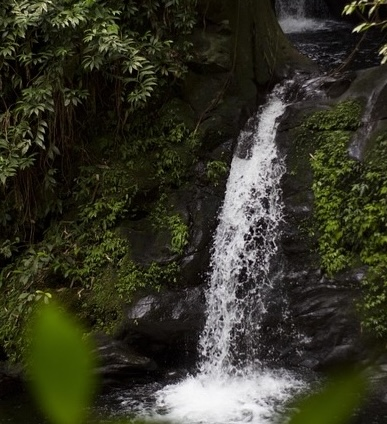
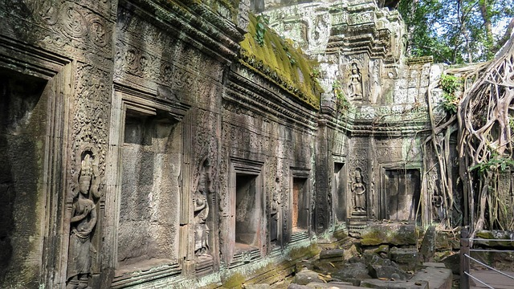
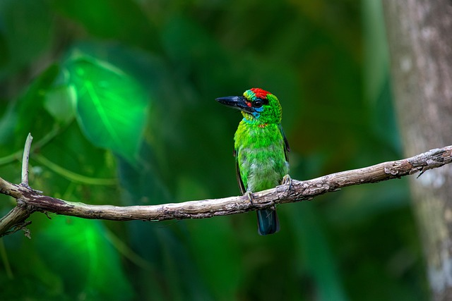

A Land of Mystery and Wonder
Despite its mysteries, the jungle is generous to those who wander it. Branches sag under the weight of ripe mangoes, starfruit, and wild guava, offering fresh sweetness at every turn. Deeper still, ancient cave systems reveal walls covered in vivid art—spirals, animal figures, and celestial symbols painted by hands centuries old. These caves serve as a reminder that the island’s story is far older and richer than its modern visitors can imagine, blending natural abundance with echoes of a forgotten past.

Tropical Fauna and Flora Abound!
Among the island’s most enduring legends is the tale of a mythical bird said to reside somewhere within the densest parts of the jungle. Locals describe it as a radiant creature with feathers that shimmer like molten gold, appearing only at dawn when the mist hangs low. Though no one has ever captured a clear glimpse, travelers swear they’ve heard its haunting, melodic call echoing through the trees, adding an air of enchantment to every trek beneath the canopy.

Ancient Ruins and Modern Exploration
The jungles of the island stretch in every direction, a living tapestry of emerald canopies, winding roots, and sun dappled clearings. Hidden deep within this lush maze are ancient ruins—weathered stone arches, vine covered stairways, and crumbling temples that hint at a civilization long vanished. Explorers often stumble upon fragments of carved pillars or mossy altars, each one raising more questions than answers about the people who once called this wild paradise home.